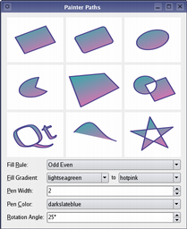
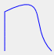

QPainter Class
The QPainter class performs low-level painting on widgets and other paint devices. More...
| Header: | #include <QPainter> |
| CMake: | find_package(Qt6 REQUIRED COMPONENTS Gui) target_link_libraries(mytarget PRIVATE Qt6::Gui) |
| qmake: | QT += gui |
| Inherited By: |
- List of all members, including inherited members
- QPainter is part of Painting Classes.
Note: All functions in this class are reentrant.
Public Types
| class | PixmapFragment |
| enum | CompositionMode { CompositionMode_SourceOver, CompositionMode_DestinationOver, CompositionMode_Clear, CompositionMode_Source, CompositionMode_Destination, …, RasterOp_SourceOrNotDestination } |
| enum | PixmapFragmentHint { OpaqueHint } |
| flags | PixmapFragmentHints |
| enum | RenderHint { Antialiasing, TextAntialiasing, SmoothPixmapTransform, VerticalSubpixelPositioning, LosslessImageRendering, NonCosmeticBrushPatterns } |
| flags | RenderHints |
Public Functions
| QPainter() | |
| QPainter(QPaintDevice *device) | |
| ~QPainter() | |
| const QBrush & | background() const |
| Qt::BGMode | backgroundMode() const |
| bool | begin(QPaintDevice *device) |
| void | beginNativePainting() |
| QRectF | boundingRect(const QRectF &rectangle, int flags, const QString &text) |
| QRect | boundingRect(const QRect &rectangle, int flags, const QString &text) |
| QRect | boundingRect(int x, int y, int w, int h, int flags, const QString &text) |
| QRectF | boundingRect(const QRectF &rectangle, const QString &text, const QTextOption &option = QTextOption()) |
| const QBrush & | brush() const |
| QPoint | brushOrigin() const |
| QRectF | clipBoundingRect() const |
| QPainterPath | clipPath() const |
| QRegion | clipRegion() const |
| QTransform | combinedTransform() const |
| QPainter::CompositionMode | compositionMode() const |
| QPaintDevice * | device() const |
| const QTransform & | deviceTransform() const |
| void | drawArc(const QRectF &rectangle, int startAngle, int spanAngle) |
| void | drawArc(const QRect &rectangle, int startAngle, int spanAngle) |
| void | drawArc(int x, int y, int width, int height, int startAngle, int spanAngle) |
| void | drawChord(const QRectF &rectangle, int startAngle, int spanAngle) |
| void | drawChord(int x, int y, int width, int height, int startAngle, int spanAngle) |
| void | drawChord(const QRect &rectangle, int startAngle, int spanAngle) |
| void | drawConvexPolygon(const QPointF *points, int pointCount) |
| void | drawConvexPolygon(const QPolygonF &polygon) |
| void | drawConvexPolygon(const QPoint *points, int pointCount) |
| void | drawConvexPolygon(const QPolygon &polygon) |
| void | drawEllipse(const QRectF &rectangle) |
| void | drawEllipse(const QRect &rectangle) |
| void | drawEllipse(int x, int y, int width, int height) |
| void | drawEllipse(const QPointF ¢er, qreal rx, qreal ry) |
| void | drawEllipse(const QPoint ¢er, int rx, int ry) |
| void | drawGlyphRun(const QPointF &position, const QGlyphRun &glyphs) |
| void | drawImage(const QRectF &target, const QImage &image, const QRectF &source, Qt::ImageConversionFlags flags = Qt::AutoColor) |
| void | drawImage(const QRect &target, const QImage &image, const QRect &source, Qt::ImageConversionFlags flags = Qt::AutoColor) |
| void | drawImage(const QPointF &point, const QImage &image, const QRectF &source, Qt::ImageConversionFlags flags = Qt::AutoColor) |
| void | drawImage(const QPoint &point, const QImage &image, const QRect &source, Qt::ImageConversionFlags flags = Qt::AutoColor) |
| void | drawImage(const QRectF &rectangle, const QImage &image) |
| void | drawImage(const QRect &rectangle, const QImage &image) |
| void | drawImage(const QPointF &point, const QImage &image) |
| void | drawImage(const QPoint &point, const QImage &image) |
| void | drawImage(int x, int y, const QImage &image, int sx = 0, int sy = 0, int sw = -1, int sh = -1, Qt::ImageConversionFlags flags = Qt::AutoColor) |
| void | drawLine(const QLineF &line) |
| void | drawLine(const QLine &line) |
| void | drawLine(int x1, int y1, int x2, int y2) |
| void | drawLine(const QPoint &p1, const QPoint &p2) |
| void | drawLine(const QPointF &p1, const QPointF &p2) |
| void | drawLines(const QLineF *lines, int lineCount) |
| void | drawLines(const QList<QLineF> &lines) |
| void | drawLines(const QPointF *pointPairs, int lineCount) |
| void | drawLines(const QList<QPointF> &pointPairs) |
| void | drawLines(const QLine *lines, int lineCount) |
| void | drawLines(const QList<QLine> &lines) |
| void | drawLines(const QPoint *pointPairs, int lineCount) |
| void | drawLines(const QList<QPoint> &pointPairs) |
| void | drawPath(const QPainterPath &path) |
| void | drawPicture(const QPointF &point, const QPicture &picture) |
| void | drawPicture(int x, int y, const QPicture &picture) |
| void | drawPicture(const QPoint &point, const QPicture &picture) |
| void | drawPie(const QRectF &rectangle, int startAngle, int spanAngle) |
| void | drawPie(int x, int y, int width, int height, int startAngle, int spanAngle) |
| void | drawPie(const QRect &rectangle, int startAngle, int spanAngle) |
| void | drawPixmap(const QRectF &target, const QPixmap &pixmap, const QRectF &source) |
| void | drawPixmap(const QRect &target, const QPixmap &pixmap, const QRect &source) |
| void | drawPixmap(int x, int y, int w, int h, const QPixmap &pixmap, int sx, int sy, int sw, int sh) |
| void | drawPixmap(int x, int y, const QPixmap &pixmap, int sx, int sy, int sw, int sh) |
| void | drawPixmap(const QPointF &point, const QPixmap &pixmap, const QRectF &source) |
| void | drawPixmap(const QPoint &point, const QPixmap &pixmap, const QRect &source) |
| void | drawPixmap(const QPointF &point, const QPixmap &pixmap) |
| void | drawPixmap(const QPoint &point, const QPixmap &pixmap) |
| void | drawPixmap(int x, int y, const QPixmap &pixmap) |
| void | drawPixmap(const QRect &rectangle, const QPixmap &pixmap) |
| void | drawPixmap(int x, int y, int width, int height, const QPixmap &pixmap) |
| void | drawPixmapFragments(const QPainter::PixmapFragment *fragments, int fragmentCount, const QPixmap &pixmap, QPainter::PixmapFragmentHints hints = PixmapFragmentHints()) |
| void | drawPoint(const QPointF &position) |
| void | drawPoint(const QPoint &position) |
| void | drawPoint(int x, int y) |
| void | drawPoints(const QPointF *points, int pointCount) |
| void | drawPoints(const QPolygonF &points) |
| void | drawPoints(const QPoint *points, int pointCount) |
| void | drawPoints(const QPolygon &points) |
| void | drawPolygon(const QPointF *points, int pointCount, Qt::FillRule fillRule = Qt::OddEvenFill) |
| void | drawPolygon(const QPolygonF &points, Qt::FillRule fillRule = Qt::OddEvenFill) |
| void | drawPolygon(const QPoint *points, int pointCount, Qt::FillRule fillRule = Qt::OddEvenFill) |
| void | drawPolygon(const QPolygon &points, Qt::FillRule fillRule = Qt::OddEvenFill) |
| void | drawPolyline(const QPointF *points, int pointCount) |
| void | drawPolyline(const QPolygonF &points) |
| void | drawPolyline(const QPoint *points, int pointCount) |
| void | drawPolyline(const QPolygon &points) |
| void | drawRect(const QRectF &rectangle) |
| void | drawRect(int x, int y, int width, int height) |
| void | drawRect(const QRect &rectangle) |
| void | drawRects(const QRectF *rectangles, int rectCount) |
| void | drawRects(const QList<QRectF> &rectangles) |
| void | drawRects(const QRect *rectangles, int rectCount) |
| void | drawRects(const QList<QRect> &rectangles) |
| void | drawRoundedRect(const QRectF &rect, qreal xRadius, qreal yRadius, Qt::SizeMode mode = Qt::AbsoluteSize) |
| void | drawRoundedRect(int x, int y, int w, int h, qreal xRadius, qreal yRadius, Qt::SizeMode mode = Qt::AbsoluteSize) |
| void | drawRoundedRect(const QRect &rect, qreal xRadius, qreal yRadius, Qt::SizeMode mode = Qt::AbsoluteSize) |
| void | drawStaticText(const QPointF &topLeftPosition, const QStaticText &staticText) |
| void | drawStaticText(const QPoint &topLeftPosition, const QStaticText &staticText) |
| void | drawStaticText(int left, int top, const QStaticText &staticText) |
| void | drawText(const QPointF &position, const QString &text) |
| void | drawText(const QPoint &position, const QString &text) |
| void | drawText(int x, int y, const QString &text) |
| void | drawText(const QRectF &rectangle, int flags, const QString &text, QRectF *boundingRect = nullptr) |
| void | drawText(const QRect &rectangle, int flags, const QString &text, QRect *boundingRect = nullptr) |
| void | drawText(int x, int y, int width, int height, int flags, const QString &text, QRect *boundingRect = nullptr) |
| void | drawText(const QRectF &rectangle, const QString &text, const QTextOption &option = QTextOption()) |
| void | drawTiledPixmap(const QRectF &rectangle, const QPixmap &pixmap, const QPointF &position = QPointF()) |
| void | drawTiledPixmap(int x, int y, int width, int height, const QPixmap &pixmap, int sx = 0, int sy = 0) |
| void | drawTiledPixmap(const QRect &rectangle, const QPixmap &pixmap, const QPoint &position = QPoint()) |
| bool | end() |
| void | endNativePainting() |
| void | eraseRect(const QRectF &rectangle) |
| void | eraseRect(int x, int y, int width, int height) |
| void | eraseRect(const QRect &rectangle) |
| void | fillPath(const QPainterPath &path, const QBrush &brush) |
| void | fillRect(const QRectF &rectangle, const QBrush &brush) |
| void | fillRect(int x, int y, int width, int height, const QBrush &brush) |
| void | fillRect(const QRect &rectangle, const QBrush &brush) |
| void | fillRect(const QRectF &rectangle, const QColor &color) |
| void | fillRect(int x, int y, int width, int height, const QColor &color) |
| void | fillRect(const QRect &rectangle, const QColor &color) |
| void | fillRect(int x, int y, int width, int height, Qt::GlobalColor color) |
| void | fillRect(const QRect &rectangle, Qt::GlobalColor color) |
| void | fillRect(const QRectF &rectangle, Qt::GlobalColor color) |
| void | fillRect(int x, int y, int width, int height, Qt::BrushStyle style) |
| void | fillRect(const QRect &rectangle, Qt::BrushStyle style) |
| void | fillRect(const QRectF &rectangle, Qt::BrushStyle style) |
| void | fillRect(int x, int y, int width, int height, QGradient::Preset preset) |
| void | fillRect(const QRect &rectangle, QGradient::Preset preset) |
| void | fillRect(const QRectF &rectangle, QGradient::Preset preset) |
| const QFont & | font() const |
| QFontInfo | fontInfo() const |
| QFontMetrics | fontMetrics() const |
| bool | hasClipping() const |
| bool | isActive() const |
| Qt::LayoutDirection | layoutDirection() const |
| qreal | opacity() const |
| QPaintEngine * | paintEngine() const |
| const QPen & | pen() const |
| QPainter::RenderHints | renderHints() const |
| void | resetTransform() |
| void | restore() |
| void | rotate(qreal angle) |
| void | save() |
| void | scale(qreal sx, qreal sy) |
| void | setBackground(const QBrush &brush) |
| void | setBackgroundMode(Qt::BGMode mode) |
| void | setBrush(const QBrush &brush) |
| void | setBrush(Qt::BrushStyle style) |
| void | setBrushOrigin(const QPointF &position) |
| void | setBrushOrigin(int x, int y) |
| void | setBrushOrigin(const QPoint &position) |
| void | setClipPath(const QPainterPath &path, Qt::ClipOperation operation = Qt::ReplaceClip) |
| void | setClipRect(const QRectF &rectangle, Qt::ClipOperation operation = Qt::ReplaceClip) |
| void | setClipRect(const QRect &rectangle, Qt::ClipOperation operation = Qt::ReplaceClip) |
| void | setClipRect(int x, int y, int width, int height, Qt::ClipOperation operation = Qt::ReplaceClip) |
| void | setClipRegion(const QRegion ®ion, Qt::ClipOperation operation = Qt::ReplaceClip) |
| void | setClipping(bool enable) |
| void | setCompositionMode(QPainter::CompositionMode mode) |
| void | setFont(const QFont &font) |
| void | setLayoutDirection(Qt::LayoutDirection direction) |
| void | setOpacity(qreal opacity) |
| void | setPen(const QPen &pen) |
| void | setPen(const QColor &color) |
| void | setPen(Qt::PenStyle style) |
| void | setRenderHint(QPainter::RenderHint hint, bool on = true) |
| void | setRenderHints(QPainter::RenderHints hints, bool on = true) |
| void | setTransform(const QTransform &transform, bool combine = false) |
| void | setViewTransformEnabled(bool enable) |
| void | setViewport(const QRect &rectangle) |
| void | setViewport(int x, int y, int width, int height) |
| void | setWindow(const QRect &rectangle) |
| void | setWindow(int x, int y, int width, int height) |
| void | setWorldMatrixEnabled(bool enable) |
| void | setWorldTransform(const QTransform &matrix, bool combine = false) |
| void | shear(qreal sh, qreal sv) |
| void | strokePath(const QPainterPath &path, const QPen &pen) |
| bool | testRenderHint(QPainter::RenderHint hint) const |
| const QTransform & | transform() const |
| void | translate(const QPointF &offset) |
| void | translate(const QPoint &offset) |
| void | translate(qreal dx, qreal dy) |
| bool | viewTransformEnabled() const |
| QRect | viewport() const |
| QRect | window() const |
| bool | worldMatrixEnabled() const |
| const QTransform & | worldTransform() const |
Detailed Description
QPainter provides highly optimized functions to do most of the drawing GUI programs require. It can draw everything from simple lines to complex shapes like pies and chords. It can also draw aligned text and pixmaps. Normally, it draws in a "natural" coordinate system, but it can also do view and world transformation. QPainter can operate on any object that inherits the QPaintDevice class.
The common use of QPainter is inside a widget's paint event: Construct and customize (e.g. set the pen or the brush) the painter. Then draw. Remember to destroy the QPainter object after drawing. For example:
void SimpleExampleWidget::paintEvent(QPaintEvent *) { QPainter painter(this); painter.setPen(Qt::blue); painter.setFont(QFont("Arial", 30)); painter.drawText(rect(), Qt::AlignCenter, "Qt"); }
The core functionality of QPainter is drawing, but the class also provide several functions that allows you to customize QPainter's settings and its rendering quality, and others that enable clipping. In addition you can control how different shapes are merged together by specifying the painter's composition mode.
The isActive() function indicates whether the painter is active. A painter is activated by the begin() function and the constructor that takes a QPaintDevice argument. The end() function, and the destructor, deactivates it.
Together with the QPaintDevice and QPaintEngine classes, QPainter form the basis for Qt's paint system. QPainter is the class used to perform drawing operations. QPaintDevice represents a device that can be painted on using a QPainter. QPaintEngine provides the interface that the painter uses to draw onto different types of devices. If the painter is active, device() returns the paint device on which the painter paints, and paintEngine() returns the paint engine that the painter is currently operating on. For more information, see the Paint System.
Sometimes it is desirable to make someone else paint on an unusual QPaintDevice. QPainter supports a static function to do this, setRedirected().
Warning: When the paintdevice is a widget, QPainter can only be used inside a paintEvent() function or in a function called by paintEvent().
Settings
There are several settings that you can customize to make QPainter draw according to your preferences:
- font() is the font used for drawing text. If the painter isActive(), you can retrieve information about the currently set font, and its metrics, using the fontInfo() and fontMetrics() functions respectively.
- brush() defines the color or pattern that is used for filling shapes.
- pen() defines the color or stipple that is used for drawing lines or boundaries.
- backgroundMode() defines whether there is a background() or not, i.e it is either Qt::OpaqueMode or Qt::TransparentMode.
- background() only applies when backgroundMode() is Qt::OpaqueMode and pen() is a stipple. In that case, it describes the color of the background pixels in the stipple.
- brushOrigin() defines the origin of the tiled brushes, normally the origin of widget's background.
- viewport(), window(), worldTransform() make up the painter's coordinate transformation system. For more information, see the Coordinate Transformations section and the Coordinate System documentation.
- hasClipping() tells whether the painter clips at all. (The paint device clips, too.) If the painter clips, it clips to clipRegion().
- layoutDirection() defines the layout direction used by the painter when drawing text.
- worldMatrixEnabled() tells whether world transformation is enabled.
- viewTransformEnabled() tells whether view transformation is enabled.
Note that some of these settings mirror settings in some paint devices, e.g. QWidget::font(). The QPainter::begin() function (or equivalently the QPainter constructor) copies these attributes from the paint device.
You can at any time save the QPainter's state by calling the save() function which saves all the available settings on an internal stack. The restore() function pops them back.
Drawing
QPainter provides functions to draw most primitives: drawPoint(), drawPoints(), drawLine(), drawRect(), drawRoundedRect(), drawEllipse(), drawArc(), drawPie(), drawChord(), drawPolyline(), drawPolygon(), drawConvexPolygon() and drawCubicBezier(). The two convenience functions, drawRects() and drawLines(), draw the given number of rectangles or lines in the given array of QRects or QLines using the current pen and brush.
The QPainter class also provides the fillRect() function which fills the given QRect, with the given QBrush, and the eraseRect() function that erases the area inside the given rectangle.
All of these functions have both integer and floating point versions.
 | Basic Drawing Example The Basic Drawing example shows how to display basic graphics primitives in a variety of styles using the QPainter class. |
If you need to draw a complex shape, especially if you need to do so repeatedly, consider creating a QPainterPath and drawing it using drawPath().
| Painter Paths example The QPainterPath class provides a container for painting operations, enabling graphical shapes to be constructed and reused. The Painter Paths example shows how painter paths can be used to build complex shapes for rendering. |  |
QPainter also provides the fillPath() function which fills the given QPainterPath with the given QBrush, and the strokePath() function that draws the outline of the given path (i.e. strokes the path).
See also the Vector Deformation example which shows how to use advanced vector techniques to draw text using a QPainterPath, the Gradients example which shows the different types of gradients that are available in Qt, and the Path Stroking example which shows Qt's built-in dash patterns and shows how custom patterns can be used to extend the range of available patterns.


Text drawing is done using drawText(). When you need fine-grained positioning, boundingRect() tells you where a given drawText() command will draw.
Drawing Pixmaps and Images
There are functions to draw pixmaps/images, namely drawPixmap(), drawImage() and drawTiledPixmap(). Both drawPixmap() and drawImage() produce the same result, except that drawPixmap() is faster on-screen while drawImage() may be faster on a QPrinter or other devices.
There is a drawPicture() function that draws the contents of an entire QPicture. The drawPicture() function is the only function that disregards all the painter's settings as QPicture has its own settings.
Drawing High Resolution Versions of Pixmaps and Images
High resolution versions of pixmaps have a device pixel ratio value larger than 1 (see QImageReader, QPixmap::devicePixelRatio()). Should it match the value of the underlying QPaintDevice, it is drawn directly onto the device with no additional transformation applied.
This is for example the case when drawing a QPixmap of 64x64 pixels size with a device pixel ratio of 2 onto a high DPI screen which also has a device pixel ratio of 2. Note that the pixmap is then effectively 32x32 pixels in user space. Code paths in Qt that calculate layout geometry based on the pixmap size will use this size. The net effect of this is that the pixmap is displayed as high DPI pixmap rather than a large pixmap.
Rendering Quality
To get the optimal rendering result using QPainter, you should use the platform independent QImage as paint device; i.e. using QImage will ensure that the result has an identical pixel representation on any platform.
The QPainter class also provides a means of controlling the rendering quality through its RenderHint enum and the support for floating point precision: All the functions for drawing primitives have floating point versions.
painter.drawEllipse(QRectF(-diameter / 2.0, -diameter / 2.0, diameter, diameter));
These are often used in combination with the QPainter::Antialiasing render hint.
QPainter painter(this);
painter.setRenderHint(QPainter::Antialiasing, true);
| Comparing concentric circles with int and float, and with or without anti-aliased rendering. Using the floating point precision versions produces evenly spaced rings. Anti-aliased rendering results in smooth circles. |
The RenderHint enum specifies flags to QPainter that may or may not be respected by any given engine. QPainter::Antialiasing indicates that the engine should antialias edges of primitives if possible, QPainter::TextAntialiasing indicates that the engine should antialias text if possible, and the QPainter::SmoothPixmapTransform indicates that the engine should use a smooth pixmap transformation algorithm.
The renderHints() function returns a flag that specifies the rendering hints that are set for this painter. Use the setRenderHint() function to set or clear the currently set RenderHints.
Coordinate Transformations
Normally, the QPainter operates on the device's own coordinate system (usually pixels), but QPainter has good support for coordinate transformations.


The most commonly used transformations are scaling, rotation, translation and shearing. Use the scale() function to scale the coordinate system by a given offset, the rotate() function to rotate it clockwise and translate() to translate it (i.e. adding a given offset to the points). You can also twist the coordinate system around the origin using the shear() function. See the Affine Transformations example for a visualization of a sheared coordinate system.
See also the Transformations example which shows how transformations influence the way that QPainter renders graphics primitives. In particular it shows how the order of transformations affects the result.
| Affine Transformations Example The Affine Transformations example shows Qt's ability to perform affine transformations on painting operations. The demo also allows the user to experiment with the transformation operations and see the results immediately. |
All the transformation operations operate on the transformation worldTransform(). A matrix transforms a point in the plane to another point. For more information about the transformation matrix, see the Coordinate System and QTransform documentation.
The setWorldTransform() function can replace or add to the currently set worldTransform(). The resetTransform() function resets any transformations that were made using translate(), scale(), shear(), rotate(), setWorldTransform(), setViewport() and setWindow() functions. The deviceTransform() returns the matrix that transforms from logical coordinates to device coordinates of the platform dependent paint device. The latter function is only needed when using platform painting commands on the platform dependent handle, and the platform does not do transformations nativly.
When drawing with QPainter, we specify points using logical coordinates which then are converted into the physical coordinates of the paint device. The mapping of the logical coordinates to the physical coordinates are handled by QPainter's combinedTransform(), a combination of viewport() and window() and worldTransform(). The viewport() represents the physical coordinates specifying an arbitrary rectangle, the window() describes the same rectangle in logical coordinates, and the worldTransform() is identical with the transformation matrix.
See also Coordinate System
Clipping
QPainter can clip any drawing operation to a rectangle, a region, or a vector path. The current clip is available using the functions clipRegion() and clipPath(). Whether paths or regions are preferred (faster) depends on the underlying paintEngine(). For example, the QImage paint engine prefers paths while the X11 paint engine prefers regions. Setting a clip is done in the painters logical coordinates.
After QPainter's clipping, the paint device may also clip. For example, most widgets clip away the pixels used by child widgets, and most printers clip away an area near the edges of the paper. This additional clipping is not reflected by the return value of clipRegion() or hasClipping().
Composition Modes
QPainter provides the CompositionMode enum which defines the Porter-Duff rules for digital image compositing; it describes a model for combining the pixels in one image, the source, with the pixels in another image, the destination.
The two most common forms of composition are Source and SourceOver. Source is used to draw opaque objects onto a paint device. In this mode, each pixel in the source replaces the corresponding pixel in the destination. In SourceOver composition mode, the source object is transparent and is drawn on top of the destination.
Note that composition transformation operates pixelwise. For that reason, there is a difference between using the graphic primitive itself and its bounding rectangle: The bounding rect contains pixels with alpha == 0 (i.e the pixels surrounding the primitive). These pixels will overwrite the other image's pixels, effectively clearing those, while the primitive only overwrites its own area.
 | Composition Modes Example The Composition Modes example, available in Qt's examples directory, allows you to experiment with the various composition modes and see the results immediately. |
Limitations
If you are using coordinates with Qt's raster-based paint engine, it is important to note that, while coordinates greater than +/- 215 can be used, any painting performed with coordinates outside this range is not guaranteed to be shown; the drawing may be clipped. This is due to the use of short int in the implementation.
The outlines generated by Qt's stroker are only an approximation when dealing with curved shapes. It is in most cases impossible to represent the outline of a bezier curve segment using another bezier curve segment, and so Qt approximates the curve outlines by using several smaller curves. For performance reasons there is a limit to how many curves Qt uses for these outlines, and thus when using large pen widths or scales the outline error increases. To generate outlines with smaller errors it is possible to use the QPainterPathStroker class, which has the setCurveThreshold member function which let's the user specify the error tolerance. Another workaround is to convert the paths to polygons first and then draw the polygons instead.
Performance
QPainter is a rich framework that allows developers to do a great variety of graphical operations, such as gradients, composition modes and vector graphics. And QPainter can do this across a variety of different hardware and software stacks. Naturally the underlying combination of hardware and software has some implications for performance, and ensuring that every single operation is fast in combination with all the various combinations of composition modes, brushes, clipping, transformation, etc, is close to an impossible task because of the number of permutations. As a compromise we have selected a subset of the QPainter API and backends, where performance is guaranteed to be as good as we can sensibly get it for the given combination of hardware and software.
The backends we focus on as high-performance engines are:
- Raster - This backend implements all rendering in pure software and is always used to render into QImages. For optimal performance only use the format types QImage::Format_ARGB32_Premultiplied, QImage::Format_RGB32 or QImage::Format_RGB16. Any other format, including QImage::Format_ARGB32, has significantly worse performance. This engine is used by default for QWidget and QPixmap.
- OpenGL 2.0 (ES) - This backend is the primary backend for hardware accelerated graphics. It can be run on desktop machines and embedded devices supporting the OpenGL 2.0 or OpenGL/ES 2.0 specification. This includes most graphics chips produced in the last couple of years. The engine can be enabled by using QPainter onto a QOpenGLWidget.
These operations are:
- Simple transformations, meaning translation and scaling, pluss 0, 90, 180, 270 degree rotations.
drawPixmap()in combination with simple transformations and opacity with non-smooth transformation mode (QPainter::SmoothPixmapTransformnot enabled as a render hint).- Rectangle fills with solid color, two-color linear gradients and simple transforms.
- Rectangular clipping with simple transformations and intersect clip.
- Composition Modes
QPainter::CompositionMode_Sourceand QPainter::CompositionMode_SourceOver. - Rounded rectangle filling using solid color and two-color linear gradients fills.
- 3x3 patched pixmaps, via qDrawBorderPixmap.
This list gives an indication of which features to safely use in an application where performance is critical. For certain setups, other operations may be fast too, but before making extensive use of them, it is recommended to benchmark and verify them on the system where the software will run in the end. There are also cases where expensive operations are ok to use, for instance when the result is cached in a QPixmap.
See also QPaintDevice, QPaintEngine, Qt SVG, Basic Drawing Example, and Drawing Utility Functions.
Member Type Documentation
enum QPainter::CompositionMode
Defines the modes supported for digital image compositing. Composition modes are used to specify how the pixels in one image, the source, are merged with the pixel in another image, the destination.
Please note that the bitwise raster operation modes, denoted with a RasterOp prefix, are only natively supported in the X11 and raster paint engines. This means that the only way to utilize these modes on the Mac is via a QImage. The RasterOp denoted blend modes are not supported for pens and brushes with alpha components. Also, turning on the QPainter::Antialiasing render hint will effectively disable the RasterOp modes.


The most common type is SourceOver (often referred to as just alpha blending) where the source pixel is blended on top of the destination pixel in such a way that the alpha component of the source defines the translucency of the pixel.
Several composition modes require an alpha channel in the source or target images to have an effect. For optimal performance the image format Format_ARGB32_Premultiplied is preferred.
When a composition mode is set it applies to all painting operator, pens, brushes, gradients and pixmap/image drawing.
| Constant | Value | Description |
|---|---|---|
QPainter::CompositionMode_SourceOver | 0 | This is the default mode. The alpha of the source is used to blend the pixel on top of the destination. |
QPainter::CompositionMode_DestinationOver | 1 | The alpha of the destination is used to blend it on top of the source pixels. This mode is the inverse of CompositionMode_SourceOver. |
QPainter::CompositionMode_Clear | 2 | The pixels in the destination are cleared (set to fully transparent) independent of the source. |
QPainter::CompositionMode_Source | 3 | The output is the source pixel. (This means a basic copy operation and is identical to SourceOver when the source pixel is opaque). |
QPainter::CompositionMode_Destination | 4 | The output is the destination pixel. This means that the blending has no effect. This mode is the inverse of CompositionMode_Source. |
QPainter::CompositionMode_SourceIn | 5 | The output is the source, where the alpha is reduced by that of the destination. |
QPainter::CompositionMode_DestinationIn | 6 | The output is the destination, where the alpha is reduced by that of the source. This mode is the inverse of CompositionMode_SourceIn. |
QPainter::CompositionMode_SourceOut | 7 | The output is the source, where the alpha is reduced by the inverse of destination. |
QPainter::CompositionMode_DestinationOut | 8 | The output is the destination, where the alpha is reduced by the inverse of the source. This mode is the inverse of CompositionMode_SourceOut. |
QPainter::CompositionMode_SourceAtop | 9 | The source pixel is blended on top of the destination, with the alpha of the source pixel reduced by the alpha of the destination pixel. |
QPainter::CompositionMode_DestinationAtop | 10 | The destination pixel is blended on top of the source, with the alpha of the destination pixel is reduced by the alpha of the destination pixel. This mode is the inverse of CompositionMode_SourceAtop. |
QPainter::CompositionMode_Xor | 11 | The source, whose alpha is reduced with the inverse of the destination alpha, is merged with the destination, whose alpha is reduced by the inverse of the source alpha. CompositionMode_Xor is not the same as the bitwise Xor. |
QPainter::CompositionMode_Plus | 12 | Both the alpha and color of the source and destination pixels are added together. |
QPainter::CompositionMode_Multiply | 13 | The output is the source color multiplied by the destination. Multiplying a color with white leaves the color unchanged, while multiplying a color with black produces black. |
QPainter::CompositionMode_Screen | 14 | The source and destination colors are inverted and then multiplied. Screening a color with white produces white, whereas screening a color with black leaves the color unchanged. |
QPainter::CompositionMode_Overlay | 15 | Multiplies or screens the colors depending on the destination color. The destination color is mixed with the source color to reflect the lightness or darkness of the destination. |
QPainter::CompositionMode_Darken | 16 | The darker of the source and destination colors is selected. |
QPainter::CompositionMode_Lighten | 17 | The lighter of the source and destination colors is selected. |
QPainter::CompositionMode_ColorDodge | 18 | The destination color is brightened to reflect the source color. A black source color leaves the destination color unchanged. |
QPainter::CompositionMode_ColorBurn | 19 | The destination color is darkened to reflect the source color. A white source color leaves the destination color unchanged. |
QPainter::CompositionMode_HardLight | 20 | Multiplies or screens the colors depending on the source color. A light source color will lighten the destination color, whereas a dark source color will darken the destination color. |
QPainter::CompositionMode_SoftLight | 21 | Darkens or lightens the colors depending on the source color. Similar to CompositionMode_HardLight. |
QPainter::CompositionMode_Difference | 22 | Subtracts the darker of the colors from the lighter. Painting with white inverts the destination color, whereas painting with black leaves the destination color unchanged. |
QPainter::CompositionMode_Exclusion | 23 | Similar to CompositionMode_Difference, but with a lower contrast. Painting with white inverts the destination color, whereas painting with black leaves the destination color unchanged. |
QPainter::RasterOp_SourceOrDestination | 24 | Does a bitwise OR operation on the source and destination pixels (src OR dst). |
QPainter::RasterOp_SourceAndDestination | 25 | Does a bitwise AND operation on the source and destination pixels (src AND dst). |
QPainter::RasterOp_SourceXorDestination | 26 | Does a bitwise XOR operation on the source and destination pixels (src XOR dst). |
QPainter::RasterOp_NotSourceAndNotDestination | 27 | Does a bitwise NOR operation on the source and destination pixels ((NOT src) AND (NOT dst)). |
QPainter::RasterOp_NotSourceOrNotDestination | 28 | Does a bitwise NAND operation on the source and destination pixels ((NOT src) OR (NOT dst)). |
QPainter::RasterOp_NotSourceXorDestination | 29 | Does a bitwise operation where the source pixels are inverted and then XOR'ed with the destination ((NOT src) XOR dst). |
QPainter::RasterOp_NotSource | 30 | Does a bitwise operation where the source pixels are inverted (NOT src). |
QPainter::RasterOp_NotSourceAndDestination | 31 | Does a bitwise operation where the source is inverted and then AND'ed with the destination ((NOT src) AND dst). |
QPainter::RasterOp_SourceAndNotDestination | 32 | Does a bitwise operation where the source is AND'ed with the inverted destination pixels (src AND (NOT dst)). |
QPainter::RasterOp_NotSourceOrDestination | 33 | Does a bitwise operation where the source is inverted and then OR'ed with the destination ((NOT src) OR dst). |
QPainter::RasterOp_ClearDestination | 35 | The pixels in the destination are cleared (set to 0) independent of the source. |
QPainter::RasterOp_SetDestination | 36 | The pixels in the destination are set (set to 1) independent of the source. |
QPainter::RasterOp_NotDestination | 37 | Does a bitwise operation where the destination pixels are inverted (NOT dst). |
QPainter::RasterOp_SourceOrNotDestination | 34 | Does a bitwise operation where the source is OR'ed with the inverted destination pixels (src OR (NOT dst)). |
See also compositionMode(), setCompositionMode(), Composition Modes, and Image Composition Example.
enum QPainter::PixmapFragmentHint
flags QPainter::PixmapFragmentHints
| Constant | Value | Description |
|---|---|---|
QPainter::OpaqueHint | 0x01 | Indicates that the pixmap fragments to be drawn are opaque. Opaque fragments are potentially faster to draw. |
The PixmapFragmentHints type is a typedef for QFlags<PixmapFragmentHint>. It stores an OR combination of PixmapFragmentHint values.
See also QPainter::drawPixmapFragments() and QPainter::PixmapFragment.
enum QPainter::RenderHint
flags QPainter::RenderHints
Renderhints are used to specify flags to QPainter that may or may not be respected by any given engine.
| Constant | Value | Description |
|---|---|---|
QPainter::Antialiasing | 0x01 | Indicates that the engine should antialias edges of primitives if possible. |
QPainter::TextAntialiasing | 0x02 | Indicates that the engine should antialias text if possible. To forcibly disable antialiasing for text, do not use this hint. Instead, set QFont::NoAntialias on your font's style strategy. |
QPainter::SmoothPixmapTransform | 0x04 | Indicates that the engine should use a smooth pixmap transformation algorithm (such as bilinear) rather than nearest neighbor. |
QPainter::VerticalSubpixelPositioning | 0x08 | Allow text to be positioned at fractions of pixels vertically as well as horizontally, if this is supported by the font engine. This is currently supported by Freetype on all platforms when the hinting preference is QFont::PreferNoHinting, and also on macOS. For most use cases this will not improve visual quality, but may increase memory consumption and some reduction in text rendering performance. Therefore, enabling this is not recommended unless the use case requires it. One such use case could be aligning glyphs with other visual primitives. This value was added in Qt 6.1. |
QPainter::LosslessImageRendering | 0x40 | Use a lossless image rendering, whenever possible. Currently, this hint is only used when QPainter is employed to output a PDF file through QPrinter or QPdfWriter, where drawImage()/drawPixmap() calls will encode images using a lossless compression algorithm instead of lossy JPEG compression. This value was added in Qt 5.13. |
QPainter::NonCosmeticBrushPatterns | 0x80 | When painting with a brush with one of the predefined pattern styles, transform the pattern too, along with the object being painted. The default is to treat the pattern as cosmetic, so that the pattern pixels will map directly to device pixels, independently of any active transformations. This value was added in Qt 6.4. |
The RenderHints type is a typedef for QFlags<RenderHint>. It stores an OR combination of RenderHint values.
See also renderHints(), setRenderHint(), and Rendering Quality.
Member Function Documentation
QPainter::QPainter()
Constructs a painter.
[explicit] QPainter::QPainter(QPaintDevice *device)
Constructs a painter that begins painting the paint device immediately.
This constructor is convenient for short-lived painters, e.g. in a QWidget::paintEvent() and should be used only once. The constructor calls begin() for you and the QPainter destructor automatically calls end().
Here's an example using begin() and end():
void MyWidget::paintEvent(QPaintEvent *) { QPainter p; p.begin(this); p.drawLine(drawingCode); // drawing code p.end(); }
The same example using this constructor:
void MyWidget::paintEvent(QPaintEvent *) { QPainter p(this); p.drawLine(drawingCode); // drawing code }
Since the constructor cannot provide feedback when the initialization of the painter failed you should rather use begin() and end() to paint on external devices, e.g. printers.
[noexcept] QPainter::~QPainter()
Destroys the painter.
const QBrush &QPainter::background() const
Returns the current background brush.
See also setBackground() and Settings.
Qt::BGMode QPainter::backgroundMode() const
Returns the current background mode.
See also setBackgroundMode() and Settings.
bool QPainter::begin(QPaintDevice *device)
Begins painting the paint device and returns true if successful; otherwise returns false.
Notice that all painter settings (setPen(), setBrush() etc.) are reset to default values when begin() is called.
The errors that can occur are serious problems, such as these:
painter->begin(0); // impossible - paint device cannot be 0 QPixmap image(0, 0); painter->begin(&image); // impossible - image.isNull() == true; painter->begin(myWidget); painter2->begin(myWidget); // impossible - only one painter at a time
Note that most of the time, you can use one of the constructors instead of begin(), and that end() is automatically done at destruction.
Warning: A paint device can only be painted by one painter at a time.
Warning: Painting on a QImage with the format QImage::Format_Indexed8 is not supported.
See also end() and QPainter().
void QPainter::beginNativePainting()
Flushes the painting pipeline and prepares for the user issuing commands directly to the underlying graphics context. Must be followed by a call to endNativePainting().
Note that only the states the underlying paint engine changes will be reset to their respective default states. The states we reset may change from release to release. The following states are currently reset in the OpenGL 2 engine:
- blending is disabled
- the depth, stencil and scissor tests are disabled
- the active texture unit is reset to 0
- the depth mask, depth function and the clear depth are reset to their default values
- the stencil mask, stencil operation and stencil function are reset to their default values
- the current color is reset to solid white
If, for example, the OpenGL polygon mode is changed by the user inside a beginNativePaint()/endNativePainting() block, it will not be reset to the default state by endNativePainting(). Here is an example that shows intermixing of painter commands and raw OpenGL commands:
QPainter painter(this); painter.fillRect(0, 0, 128, 128, Qt::green); painter.beginNativePainting(); glEnable(GL_SCISSOR_TEST); glScissor(0, 0, 64, 64); glClearColor(1, 0, 0, 1); glClear(GL_COLOR_BUFFER_BIT); glDisable(GL_SCISSOR_TEST); painter.endNativePainting();
See also endNativePainting().
QRectF QPainter::boundingRect(const QRectF &rectangle, int flags, const QString &text)
Returns the bounding rectangle of the text as it will appear when drawn inside the given rectangle with the specified flags using the currently set font(); i.e the function tells you where the drawText() function will draw when given the same arguments.
If the text does not fit within the given rectangle using the specified flags, the function returns the required rectangle.
The flags argument is a bitwise OR of the following flags:
- Qt::AlignLeft
- Qt::AlignRight
- Qt::AlignHCenter
- Qt::AlignTop
- Qt::AlignBottom
- Qt::AlignVCenter
- Qt::AlignCenter
- Qt::TextSingleLine
- Qt::TextExpandTabs
- Qt::TextShowMnemonic
- Qt::TextWordWrap
- Qt::TextIncludeTrailingSpaces
If several of the horizontal or several of the vertical alignment flags are set, the resulting alignment is undefined.
See also drawText(), Qt::Alignment, and Qt::TextFlag.
QRect QPainter::boundingRect(const QRect &rectangle, int flags, const QString &text)
This is an overloaded function.
Returns the bounding rectangle of the text as it will appear when drawn inside the given rectangle with the specified flags using the currently set font().
QRect QPainter::boundingRect(int x, int y, int w, int h, int flags, const QString &text)
This is an overloaded function.
Returns the bounding rectangle of the given text as it will appear when drawn inside the rectangle beginning at the point (x, y) with width w and height h.
QRectF QPainter::boundingRect(const QRectF &rectangle, const QString &text, const QTextOption &option = QTextOption())
This is an overloaded function.
Instead of specifying flags as a bitwise OR of the Qt::AlignmentFlag and Qt::TextFlag, this overloaded function takes an option argument. The QTextOption class provides a description of general rich text properties.
See also QTextOption.
const QBrush &QPainter::brush() const
Returns the painter's current brush.
See also QPainter::setBrush() and Settings.
QPoint QPainter::brushOrigin() const
Returns the currently set brush origin.
See also setBrushOrigin() and Settings.
QRectF QPainter::clipBoundingRect() const
Returns the bounding rectangle of the current clip if there is a clip; otherwise returns an empty rectangle. Note that the clip region is given in logical coordinates.
The bounding rectangle is not guaranteed to be tight.
See also setClipRect(), setClipPath(), and setClipRegion().
QPainterPath QPainter::clipPath() const
Returns the current clip path in logical coordinates.
Warning: QPainter does not store the combined clip explicitly as this is handled by the underlying QPaintEngine, so the path is recreated on demand and transformed to the current logical coordinate system. This is potentially an expensive operation.
See also setClipPath(), clipRegion(), and setClipping().
QRegion QPainter::clipRegion() const
Returns the currently set clip region. Note that the clip region is given in logical coordinates.
Warning: QPainter does not store the combined clip explicitly as this is handled by the underlying QPaintEngine, so the path is recreated on demand and transformed to the current logical coordinate system. This is potentially an expensive operation.
See also setClipRegion(), clipPath(), and setClipping().
QTransform QPainter::combinedTransform() const
Returns the transformation matrix combining the current window/viewport and world transformation.
See also setWorldTransform(), setWindow(), and setViewport().
QPainter::CompositionMode QPainter::compositionMode() const
Returns the current composition mode.
See also CompositionMode and setCompositionMode().
QPaintDevice *QPainter::device() const
Returns the paint device on which this painter is currently painting, or nullptr if the painter is not active.
See also isActive().
const QTransform &QPainter::deviceTransform() const
Returns the matrix that transforms from logical coordinates to device coordinates of the platform dependent paint device.
This function is only needed when using platform painting commands on the platform dependent handle (Qt::HANDLE), and the platform does not do transformations nativly.
The QPaintEngine::PaintEngineFeature enum can be queried to determine whether the platform performs the transformations or not.
See also worldTransform() and QPaintEngine::hasFeature().
void QPainter::drawArc(const QRectF &rectangle, int startAngle, int spanAngle)
Draws the arc defined by the given rectangle, startAngle and spanAngle.
The startAngle and spanAngle must be specified in 1/16th of a degree, i.e. a full circle equals 5760 (16 * 360). Positive values for the angles mean counter-clockwise while negative values mean the clockwise direction. Zero degrees is at the 3 o'clock position.
 | QRectF rectangle(10.0, 20.0, 80.0, 60.0); int startAngle = 30 * 16; int spanAngle = 120 * 16; QPainter painter(this); painter.drawArc(rectangle, startAngle, spanAngle); |
See also drawPie(), drawChord(), and Coordinate System.
void QPainter::drawArc(const QRect &rectangle, int startAngle, int spanAngle)
This is an overloaded function.
Draws the arc defined by the given rectangle, startAngle and spanAngle.
void QPainter::drawArc(int x, int y, int width, int height, int startAngle, int spanAngle)
This is an overloaded function.
Draws the arc defined by the rectangle beginning at (x, y) with the specified width and height, and the given startAngle and spanAngle.
void QPainter::drawChord(const QRectF &rectangle, int startAngle, int spanAngle)
Draws the chord defined by the given rectangle, startAngle and spanAngle. The chord is filled with the current brush().
The startAngle and spanAngle must be specified in 1/16th of a degree, i.e. a full circle equals 5760 (16 * 360). Positive values for the angles mean counter-clockwise while negative values mean the clockwise direction. Zero degrees is at the 3 o'clock position.
 | QRectF rectangle(10.0, 20.0, 80.0, 60.0); int startAngle = 30 * 16; int spanAngle = 120 * 16; QPainter painter(this); painter.drawChord(rect, startAngle, spanAngle); |
See also drawArc(), drawPie(), and Coordinate System.
void QPainter::drawChord(int x, int y, int width, int height, int startAngle, int spanAngle)
This is an overloaded function.
Draws the chord defined by the rectangle beginning at (x, y) with the specified width and height, and the given startAngle and spanAngle.
void QPainter::drawChord(const QRect &rectangle, int startAngle, int spanAngle)
This is an overloaded function.
Draws the chord defined by the given rectangle, startAngle and spanAngle.
void QPainter::drawConvexPolygon(const QPointF *points, int pointCount)
Draws the convex polygon defined by the first pointCount points in the array points using the current pen.
 | static const QPointF points[4] = { QPointF(10.0, 80.0), QPointF(20.0, 10.0), QPointF(80.0, 30.0), QPointF(90.0, 70.0) }; QPainter painter(this); painter.drawConvexPolygon(points, 4); |
The first point is implicitly connected to the last point, and the polygon is filled with the current brush(). If the supplied polygon is not convex, i.e. it contains at least one angle larger than 180 degrees, the results are undefined.
On some platforms (e.g. X11), the drawConvexPolygon() function can be faster than the drawPolygon() function.
See also drawPolygon(), drawPolyline(), and Coordinate System.
void QPainter::drawConvexPolygon(const QPolygonF &polygon)
This is an overloaded function.
Draws the convex polygon defined by polygon using the current pen and brush.
void QPainter::drawConvexPolygon(const QPoint *points, int pointCount)
This is an overloaded function.
Draws the convex polygon defined by the first pointCount points in the array points using the current pen.
void QPainter::drawConvexPolygon(const QPolygon &polygon)
This is an overloaded function.
Draws the convex polygon defined by polygon using the current pen and brush.
void QPainter::drawEllipse(const QRectF &rectangle)
Draws the ellipse defined by the given rectangle.
A filled ellipse has a size of rectangle.size(). A stroked ellipse has a size of rectangle.size() plus the pen width.

See also drawPie() and Coordinate System.
void QPainter::drawEllipse(const QRect &rectangle)
This is an overloaded function.
Draws the ellipse defined by the given rectangle.
void QPainter::drawEllipse(int x, int y, int width, int height)
This is an overloaded function.
Draws the ellipse defined by the rectangle beginning at (x, y) with the given width and height.
void QPainter::drawEllipse(const QPointF ¢er, qreal rx, qreal ry)
This is an overloaded function.
Draws the ellipse positioned at center with radii rx and ry.
void QPainter::drawEllipse(const QPoint ¢er, int rx, int ry)
This is an overloaded function.
Draws the ellipse positioned at center with radii rx and ry.
void QPainter::drawGlyphRun(const QPointF &position, const QGlyphRun &glyphs)
Draws the glyphs represented by glyphs at position. The position gives the edge of the baseline for the string of glyphs. The glyphs will be retrieved from the font selected on glyphs and at offsets given by the positions in glyphs.
See also QGlyphRun::setRawFont(), QGlyphRun::setPositions(), and QGlyphRun::setGlyphIndexes().
void QPainter::drawImage(const QRectF &target, const QImage &image, const QRectF &source, Qt::ImageConversionFlags flags = Qt::AutoColor)
Draws the rectangular portion source of the given image into the target rectangle in the paint device.
Note: The image is scaled to fit the rectangle, if both the image and rectangle size disagree.
Note: See Drawing High Resolution Versions of Pixmaps and Images on how this is affected by QImage::devicePixelRatio().
If the image needs to be modified to fit in a lower-resolution result (e.g. converting from 32-bit to 8-bit), use the flags to specify how you would prefer this to happen.
QRectF target(10.0, 20.0, 80.0, 60.0); QRectF source(0.0, 0.0, 70.0, 40.0); QImage image(":/images/myImage.png"); QPainter painter(this); painter.drawImage(target, image, source); |
See also drawPixmap() and QImage::devicePixelRatio().
void QPainter::drawImage(const QRect &target, const QImage &image, const QRect &source, Qt::ImageConversionFlags flags = Qt::AutoColor)
This is an overloaded function.
Draws the rectangular portion source of the given image into the target rectangle in the paint device.
Note: The image is scaled to fit the rectangle, if both the image and rectangle size disagree.
void QPainter::drawImage(const QPointF &point, const QImage &image, const QRectF &source, Qt::ImageConversionFlags flags = Qt::AutoColor)
This is an overloaded function.
Draws the rectangular portion source of the given image with its origin at the given point.
void QPainter::drawImage(const QPoint &point, const QImage &image, const QRect &source, Qt::ImageConversionFlags flags = Qt::AutoColor)
This is an overloaded function.
Draws the rectangular portion source of the given image with its origin at the given point.
void QPainter::drawImage(const QRectF &rectangle, const QImage &image)
This is an overloaded function.
Draws the given image into the given rectangle.
Note: The image is scaled to fit the rectangle, if both the image and rectangle size disagree.
void QPainter::drawImage(const QRect &rectangle, const QImage &image)
This is an overloaded function.
Draws the given image into the given rectangle.
Note: The image is scaled to fit the rectangle, if both the image and rectangle size disagree.
void QPainter::drawImage(const QPointF &point, const QImage &image)
This is an overloaded function.
Draws the given image at the given point.
void QPainter::drawImage(const QPoint &point, const QImage &image)
This is an overloaded function.
Draws the given image at the given point.
void QPainter::drawImage(int x, int y, const QImage &image, int sx = 0, int sy = 0, int sw = -1, int sh = -1, Qt::ImageConversionFlags flags = Qt::AutoColor)
This is an overloaded function.
Draws an image at (x, y) by copying a part of image into the paint device.
(x, y) specifies the top-left point in the paint device that is to be drawn onto. (sx, sy) specifies the top-left point in image that is to be drawn. The default is (0, 0).
(sw, sh) specifies the size of the image that is to be drawn. The default, (0, 0) (and negative) means all the way to the bottom-right of the image.
void QPainter::drawLine(const QLineF &line)
Draws a line defined by line.

See also drawLines(), drawPolyline(), and Coordinate System.
void QPainter::drawLine(const QLine &line)
This is an overloaded function.
Draws a line defined by line.
void QPainter::drawLine(int x1, int y1, int x2, int y2)
This is an overloaded function.
Draws a line from (x1, y1) to (x2, y2).
void QPainter::drawLine(const QPoint &p1, const QPoint &p2)
This is an overloaded function.
Draws a line from p1 to p2.
void QPainter::drawLine(const QPointF &p1, const QPointF &p2)
This is an overloaded function.
Draws a line from p1 to p2.
void QPainter::drawLines(const QLineF *lines, int lineCount)
Draws the first lineCount lines in the array lines using the current pen.
See also drawLine() and drawPolyline().
void QPainter::drawLines(const QList<QLineF> &lines)
This is an overloaded function.
Draws the set of lines defined by the list lines using the current pen and brush.
void QPainter::drawLines(const QPointF *pointPairs, int lineCount)
This is an overloaded function.
Draws the first lineCount lines in the array pointPairs using the current pen. The lines are specified as pairs of points so the number of entries in pointPairs must be at least lineCount * 2.
void QPainter::drawLines(const QList<QPointF> &pointPairs)
This is an overloaded function.
Draws a line for each pair of points in the vector pointPairs using the current pen. If there is an odd number of points in the array, the last point will be ignored.
void QPainter::drawLines(const QLine *lines, int lineCount)
This is an overloaded function.
Draws the first lineCount lines in the array lines using the current pen.
void QPainter::drawLines(const QList<QLine> &lines)
This is an overloaded function.
Draws the set of lines defined by the list lines using the current pen and brush.
void QPainter::drawLines(const QPoint *pointPairs, int lineCount)
This is an overloaded function.
Draws the first lineCount lines in the array pointPairs using the current pen.
void QPainter::drawLines(const QList<QPoint> &pointPairs)
This is an overloaded function.
Draws a line for each pair of points in the vector pointPairs using the current pen.
void QPainter::drawPath(const QPainterPath &path)
Draws the given painter path using the current pen for outline and the current brush for filling.
|  | QPainterPath path; path.moveTo(20, 80); path.lineTo(20, 30); path.cubicTo(80, 0, 50, 50, 80, 80); QPainter painter(this); painter.drawPath(path); |
See also the Painter Paths example and the Vector Deformation example.
void QPainter::drawPicture(const QPointF &point, const QPicture &picture)
Replays the given picture at the given point.
The QPicture class is a paint device that records and replays QPainter commands. A picture serializes the painter commands to an IO device in a platform-independent format. Everything that can be painted on a widget or pixmap can also be stored in a picture.
This function does exactly the same as QPicture::play() when called with point = QPointF(0, 0).
Note: The state of the painter is preserved by this function.
QPicture picture; QPointF point(10.0, 20.0); picture.load("drawing.pic"); QPainter painter(this); painter.drawPicture(0, 0, picture); |
See also QPicture::play().
void QPainter::drawPicture(int x, int y, const QPicture &picture)
This is an overloaded function.
Draws the given picture at point (x, y).
void QPainter::drawPicture(const QPoint &point, const QPicture &picture)
This is an overloaded function.
Replays the given picture at the given point.
void QPainter::drawPie(const QRectF &rectangle, int startAngle, int spanAngle)
Draws a pie defined by the given rectangle, startAngle and spanAngle.
The pie is filled with the current brush().
The startAngle and spanAngle must be specified in 1/16th of a degree, i.e. a full circle equals 5760 (16 * 360). Positive values for the angles mean counter-clockwise while negative values mean the clockwise direction. Zero degrees is at the 3 o'clock position.
 | QRectF rectangle(10.0, 20.0, 80.0, 60.0); int startAngle = 30 * 16; int spanAngle = 120 * 16; QPainter painter(this); painter.drawPie(rectangle, startAngle, spanAngle); |
See also drawEllipse(), drawChord(), and Coordinate System.
void QPainter::drawPie(int x, int y, int width, int height, int startAngle, int spanAngle)
This is an overloaded function.
Draws the pie defined by the rectangle beginning at (x, y) with the specified width and height, and the given startAngle and spanAngle.
void QPainter::drawPie(const QRect &rectangle, int startAngle, int spanAngle)
This is an overloaded function.
Draws a pie defined by the given rectangle, startAngle and and spanAngle.
void QPainter::drawPixmap(const QRectF &target, const QPixmap &pixmap, const QRectF &source)
Draws the rectangular portion source of the given pixmap into the given target in the paint device.
Note: The pixmap is scaled to fit the rectangle, if both the pixmap and rectangle size disagree.
Note: See Drawing High Resolution Versions of Pixmaps and Images on how this is affected by QPixmap::devicePixelRatio().
QRectF target(10.0, 20.0, 80.0, 60.0); QRectF source(0.0, 0.0, 70.0, 40.0); QPixmap pixmap(":myPixmap.png"); QPainter painter(this); painter.drawPixmap(target, pixmap, source); |
If pixmap is a QBitmap it is drawn with the bits that are "set" using the pens color. If backgroundMode is Qt::OpaqueMode, the "unset" bits are drawn using the color of the background brush; if backgroundMode is Qt::TransparentMode, the "unset" bits are transparent. Drawing bitmaps with gradient or texture colors is not supported.
See also drawImage() and QPixmap::devicePixelRatio().
void QPainter::drawPixmap(const QRect &target, const QPixmap &pixmap, const QRect &source)
This is an overloaded function.
Draws the rectangular portion source of the given pixmap into the given target in the paint device.
Note: The pixmap is scaled to fit the rectangle, if both the pixmap and rectangle size disagree.
void QPainter::drawPixmap(int x, int y, int w, int h, const QPixmap &pixmap, int sx, int sy, int sw, int sh)
This is an overloaded function.
Draws the rectangular portion with the origin (sx, sy), width sw and height sh, of the given pixmap , at the point (x, y), with a width of w and a height of h. If sw or sh are equal to zero the width/height of the pixmap is used and adjusted by the offset sx/sy;
void QPainter::drawPixmap(int x, int y, const QPixmap &pixmap, int sx, int sy, int sw, int sh)
This is an overloaded function.
Draws a pixmap at (x, y) by copying a part of the given pixmap into the paint device.
(x, y) specifies the top-left point in the paint device that is to be drawn onto. (sx, sy) specifies the top-left point in pixmap that is to be drawn. The default is (0, 0).
(sw, sh) specifies the size of the pixmap that is to be drawn. The default, (0, 0) (and negative) means all the way to the bottom-right of the pixmap.
void QPainter::drawPixmap(const QPointF &point, const QPixmap &pixmap, const QRectF &source)
This is an overloaded function.
Draws the rectangular portion source of the given pixmap with its origin at the given point.
void QPainter::drawPixmap(const QPoint &point, const QPixmap &pixmap, const QRect &source)
This is an overloaded function.
Draws the rectangular portion source of the given pixmap with its origin at the given point.
void QPainter::drawPixmap(const QPointF &point, const QPixmap &pixmap)
This is an overloaded function.
Draws the given pixmap with its origin at the given point.
void QPainter::drawPixmap(const QPoint &point, const QPixmap &pixmap)
This is an overloaded function.
Draws the given pixmap with its origin at the given point.
void QPainter::drawPixmap(int x, int y, const QPixmap &pixmap)
This is an overloaded function.
Draws the given pixmap at position (x, y).
void QPainter::drawPixmap(const QRect &rectangle, const QPixmap &pixmap)
This is an overloaded function.
Draws the given pixmap into the given rectangle.
Note: The pixmap is scaled to fit the rectangle, if both the pixmap and rectangle size disagree.
void QPainter::drawPixmap(int x, int y, int width, int height, const QPixmap &pixmap)
This is an overloaded function.
Draws the pixmap into the rectangle at position (x, y) with the given width and height.
void QPainter::drawPixmapFragments(const QPainter::PixmapFragment *fragments, int fragmentCount, const QPixmap &pixmap, QPainter::PixmapFragmentHints hints = PixmapFragmentHints())
This function is used to draw pixmap, or a sub-rectangle of pixmap, at multiple positions with different scale, rotation and opacity. fragments is an array of fragmentCount elements specifying the parameters used to draw each pixmap fragment. The hints parameter can be used to pass in drawing hints.
This function is potentially faster than multiple calls to drawPixmap(), since the backend can optimize state changes.
See also QPainter::PixmapFragment and QPainter::PixmapFragmentHint.
void QPainter::drawPoint(const QPointF &position)
Draws a single point at the given position using the current pen's color.
See also Coordinate System.
void QPainter::drawPoint(const QPoint &position)
This is an overloaded function.
Draws a single point at the given position using the current pen's color.
void QPainter::drawPoint(int x, int y)
This is an overloaded function.
Draws a single point at position (x, y).
void QPainter::drawPoints(const QPointF *points, int pointCount)
Draws the first pointCount points in the array points using the current pen's color.
See also Coordinate System.
void QPainter::drawPoints(const QPolygonF &points)
This is an overloaded function.
Draws the points in the vector points.
void QPainter::drawPoints(const QPoint *points, int pointCount)
This is an overloaded function.
Draws the first pointCount points in the array points using the current pen's color.
void QPainter::drawPoints(const QPolygon &points)
This is an overloaded function.
Draws the points in the vector points.
void QPainter::drawPolygon(const QPointF *points, int pointCount, Qt::FillRule fillRule = Qt::OddEvenFill)
Draws the polygon defined by the first pointCount points in the array points using the current pen and brush.
| static const QPointF points[4] = { QPointF(10.0, 80.0), QPointF(20.0, 10.0), QPointF(80.0, 30.0), QPointF(90.0, 70.0) }; QPainter painter(this); painter.drawPolygon(points, 4); |
The first point is implicitly connected to the last point, and the polygon is filled with the current brush().
If fillRule is Qt::WindingFill, the polygon is filled using the winding fill algorithm. If fillRule is Qt::OddEvenFill, the polygon is filled using the odd-even fill algorithm. See Qt::FillRule for a more detailed description of these fill rules.
See also drawConvexPolygon(), drawPolyline(), and Coordinate System.
void QPainter::drawPolygon(const QPolygonF &points, Qt::FillRule fillRule = Qt::OddEvenFill)
This is an overloaded function.
Draws the polygon defined by the given points using the fill rule fillRule.
void QPainter::drawPolygon(const QPoint *points, int pointCount, Qt::FillRule fillRule = Qt::OddEvenFill)
This is an overloaded function.
Draws the polygon defined by the first pointCount points in the array points.
void QPainter::drawPolygon(const QPolygon &points, Qt::FillRule fillRule = Qt::OddEvenFill)
This is an overloaded function.
Draws the polygon defined by the given points using the fill rule fillRule.
void QPainter::drawPolyline(const QPointF *points, int pointCount)
Draws the polyline defined by the first pointCount points in points using the current pen.
Note that unlike the drawPolygon() function the last point is not connected to the first, neither is the polyline filled.
static const QPointF points[3] = { QPointF(10.0, 80.0), QPointF(20.0, 10.0), QPointF(80.0, 30.0), }; QPainter painter(this); painter.drawPolyline(points, 3); |
See also drawLines(), drawPolygon(), and Coordinate System.
void QPainter::drawPolyline(const QPolygonF &points)
This is an overloaded function.
Draws the polyline defined by the given points using the current pen.
void QPainter::drawPolyline(const QPoint *points, int pointCount)
This is an overloaded function.
Draws the polyline defined by the first pointCount points in points using the current pen.
void QPainter::drawPolyline(const QPolygon &points)
This is an overloaded function.
Draws the polyline defined by the given points using the current pen.
void QPainter::drawRect(const QRectF &rectangle)
Draws the current rectangle with the current pen and brush.
A filled rectangle has a size of rectangle.size(). A stroked rectangle has a size of rectangle.size() plus the pen width.

See also drawRects(), drawPolygon(), and Coordinate System.
void QPainter::drawRect(int x, int y, int width, int height)
This is an overloaded function.
Draws a rectangle with upper left corner at (x, y) and with the given width and height.
void QPainter::drawRect(const QRect &rectangle)
This is an overloaded function.
Draws the current rectangle with the current pen and brush.
void QPainter::drawRects(const QRectF *rectangles, int rectCount)
Draws the first rectCount of the given rectangles using the current pen and brush.
See also drawRect().
void QPainter::drawRects(const QList<QRectF> &rectangles)
This is an overloaded function.
Draws the given rectangles using the current pen and brush.
void QPainter::drawRects(const QRect *rectangles, int rectCount)
This is an overloaded function.
Draws the first rectCount of the given rectangles using the current pen and brush.
void QPainter::drawRects(const QList<QRect> &rectangles)
This is an overloaded function.
Draws the given rectangles using the current pen and brush.
void QPainter::drawRoundedRect(const QRectF &rect, qreal xRadius, qreal yRadius, Qt::SizeMode mode = Qt::AbsoluteSize)
Draws the given rectangle rect with rounded corners.
The xRadius and yRadius arguments specify the radii of the ellipses defining the corners of the rounded rectangle. When mode is Qt::RelativeSize, xRadius and yRadius are specified in percentage of half the rectangle's width and height respectively, and should be in the range 0.0 to 100.0.
A filled rectangle has a size of rect.size(). A stroked rectangle has a size of rect.size() plus the pen width.
 | QRectF rectangle(10.0, 20.0, 80.0, 60.0); QPainter painter(this); painter.drawRoundedRect(rectangle, 20.0, 15.0); |
void QPainter::drawRoundedRect(int x, int y, int w, int h, qreal xRadius, qreal yRadius, Qt::SizeMode mode = Qt::AbsoluteSize)
This is an overloaded function.
Draws the given rectangle x, y, w, h with rounded corners.
void QPainter::drawRoundedRect(const QRect &rect, qreal xRadius, qreal yRadius, Qt::SizeMode mode = Qt::AbsoluteSize)
This is an overloaded function.
Draws the given rectangle rect with rounded corners.
void QPainter::drawStaticText(const QPointF &topLeftPosition, const QStaticText &staticText)
Draws the given staticText at the given topLeftPosition.
The text will be drawn using the font and the transformation set on the painter. If the font and/or transformation set on the painter are different from the ones used to initialize the layout of the QStaticText, then the layout will have to be recalculated. Use QStaticText::prepare() to initialize staticText with the font and transformation with which it will later be drawn.
If topLeftPosition is not the same as when staticText was initialized, or when it was last drawn, then there will be a slight overhead when translating the text to its new position.
Note: If the painter's transformation is not affine, then staticText will be drawn using regular calls to drawText(), losing any potential for performance improvement.
Note: The y-position is used as the top of the font.
See also QStaticText.
void QPainter::drawStaticText(const QPoint &topLeftPosition, const QStaticText &staticText)
This is an overloaded function.
Draws the staticText at the topLeftPosition.
Note: The y-position is used as the top of the font.
void QPainter::drawStaticText(int left, int top, const QStaticText &staticText)
This is an overloaded function.
Draws the staticText at coordinates left and top.
Note: The y-position is used as the top of the font.
void QPainter::drawText(const QPointF &position, const QString &text)
Draws the given text with the currently defined text direction, beginning at the given position.
This function does not handle the newline character (\n), as it cannot break text into multiple lines, and it cannot display the newline character. Use the QPainter::drawText() overload that takes a rectangle instead if you want to draw multiple lines of text with the newline character, or if you want the text to be wrapped.
By default, QPainter draws text anti-aliased.
Note: The y-position is used as the baseline of the font.
See also setFont() and setPen().
void QPainter::drawText(const QPoint &position, const QString &text)
This is an overloaded function.
Draws the given text with the currently defined text direction, beginning at the given position.
By default, QPainter draws text anti-aliased.
Note: The y-position is used as the baseline of the font.
See also setFont() and setPen().
void QPainter::drawText(int x, int y, const QString &text)
This is an overloaded function.
Draws the given text at position (x, y), using the painter's currently defined text direction.
By default, QPainter draws text anti-aliased.
Note: The y-position is used as the baseline of the font.
See also setFont() and setPen().
void QPainter::drawText(const QRectF &rectangle, int flags, const QString &text, QRectF *boundingRect = nullptr)
This is an overloaded function.
Draws the given text within the provided rectangle. The rectangle along with alignment flags defines the anchors for the text.
 | QPainter painter(this); painter.drawText(rect, Qt::AlignCenter, tr("Qt\nProject")); |
The boundingRect (if not null) is set to what the bounding rectangle should be in order to enclose the whole text. For example, in the following image, the dotted line represents boundingRect as calculated by the function, and the dashed line represents rectangle:
 | QPainter painter(this); QFont font = painter.font(); font.setPixelSize(48); painter.setFont(font); const QRect rectangle = QRect(0, 0, 100, 50); QRect boundingRect; painter.drawText(rectangle, 0, tr("Hello"), &boundingRect); QPen pen = painter.pen(); pen.setStyle(Qt::DotLine); painter.setPen(pen); painter.drawRect(boundingRect.adjusted(0, 0, -pen.width(), -pen.width())); pen.setStyle(Qt::DashLine); painter.setPen(pen); painter.drawRect(rectangle.adjusted(0, 0, -pen.width(), -pen.width())); |
The flags argument is a bitwise OR of the following flags:
- Qt::AlignLeft
- Qt::AlignRight
- Qt::AlignHCenter
- Qt::AlignJustify
- Qt::AlignTop
- Qt::AlignBottom
- Qt::AlignVCenter
- Qt::AlignCenter
- Qt::TextDontClip
- Qt::TextSingleLine
- Qt::TextExpandTabs
- Qt::TextShowMnemonic
- Qt::TextWordWrap
- Qt::TextIncludeTrailingSpaces
By default, QPainter draws text anti-aliased.
Note: The y-coordinate of rectangle is used as the top of the font.
See also Qt::AlignmentFlag, Qt::TextFlag, boundingRect(), and layoutDirection().
void QPainter::drawText(const QRect &rectangle, int flags, const QString &text, QRect *boundingRect = nullptr)
This is an overloaded function.
Draws the given text within the provided rectangle according to the specified flags.
The boundingRect (if not null) is set to the what the bounding rectangle should be in order to enclose the whole text. For example, in the following image, the dotted line represents boundingRect as calculated by the function, and the dashed line represents rectangle:
| QPainter painter(this); QFont font = painter.font(); font.setPixelSize(48); painter.setFont(font); const QRect rectangle = QRect(0, 0, 100, 50); QRect boundingRect; painter.drawText(rectangle, 0, tr("Hello"), &boundingRect); QPen pen = painter.pen(); pen.setStyle(Qt::DotLine); painter.setPen(pen); painter.drawRect(boundingRect.adjusted(0, 0, -pen.width(), -pen.width())); pen.setStyle(Qt::DashLine); painter.setPen(pen); painter.drawRect(rectangle.adjusted(0, 0, -pen.width(), -pen.width())); |
By default, QPainter draws text anti-aliased.
Note: The y-coordinate of rectangle is used as the top of the font.
See also setFont() and setPen().
void QPainter::drawText(int x, int y, int width, int height, int flags, const QString &text, QRect *boundingRect = nullptr)
This is an overloaded function.
Draws the given text within the rectangle with origin (x, y), width and height.
The boundingRect (if not null) is set to the what the bounding rectangle should be in order to enclose the whole text. For example, in the following image, the dotted line represents boundingRect as calculated by the function, and the dashed line represents the rectangle defined by x, y, width and height:
| QPainter painter(this); QFont font = painter.font(); font.setPixelSize(48); painter.setFont(font); const QRect rectangle = QRect(0, 0, 100, 50); QRect boundingRect; painter.drawText(rectangle, 0, tr("Hello"), &boundingRect); QPen pen = painter.pen(); pen.setStyle(Qt::DotLine); painter.setPen(pen); painter.drawRect(boundingRect.adjusted(0, 0, -pen.width(), -pen.width())); pen.setStyle(Qt::DashLine); painter.setPen(pen); painter.drawRect(rectangle.adjusted(0, 0, -pen.width(), -pen.width())); |
The flags argument is a bitwise OR of the following flags:
- Qt::AlignLeft
- Qt::AlignRight
- Qt::AlignHCenter
- Qt::AlignJustify
- Qt::AlignTop
- Qt::AlignBottom
- Qt::AlignVCenter
- Qt::AlignCenter
- Qt::TextSingleLine
- Qt::TextExpandTabs
- Qt::TextShowMnemonic
- Qt::TextWordWrap
By default, QPainter draws text anti-aliased.
Note: The y-position is used as the top of the font.
See also Qt::AlignmentFlag, Qt::TextFlag, setFont(), and setPen().
void QPainter::drawText(const QRectF &rectangle, const QString &text, const QTextOption &option = QTextOption())
This is an overloaded function.
Draws the given text in the rectangle specified using the option to control its positioning, direction, and orientation. The options given in option override those set on the QPainter object itself.
By default, QPainter draws text anti-aliased.
Note: The y-coordinate of rectangle is used as the top of the font.
See also setFont() and setPen().
void QPainter::drawTiledPixmap(const QRectF &rectangle, const QPixmap &pixmap, const QPointF &position = QPointF())
Draws a tiled pixmap, inside the given rectangle with its origin at the given position.
Calling drawTiledPixmap() is similar to calling drawPixmap() several times to fill (tile) an area with a pixmap, but is potentially much more efficient depending on the underlying window system.
drawTiledPixmap() will produce the same visual tiling pattern on high-dpi displays (with devicePixelRatio > 1), compared to normal- dpi displays. Set the devicePixelRatio on the pixmap to control the tile size. For example, setting it to 2 halves the tile width and height (on both 1x and 2x displays), and produces high-resolution output on 2x displays.
The position offset is always in the painter coordinate system, indepentent of display devicePixelRatio.
See also drawPixmap().
void QPainter::drawTiledPixmap(int x, int y, int width, int height, const QPixmap &pixmap, int sx = 0, int sy = 0)
This is an overloaded function.
Draws a tiled pixmap in the specified rectangle.
(x, y) specifies the top-left point in the paint device that is to be drawn onto; with the given width and height. (sx, sy) specifies the top-left point in the pixmap that is to be drawn; this defaults to (0, 0).
void QPainter::drawTiledPixmap(const QRect &rectangle, const QPixmap &pixmap, const QPoint &position = QPoint())
This is an overloaded function.
Draws a tiled pixmap, inside the given rectangle with its origin at the given position.
bool QPainter::end()
Ends painting. Any resources used while painting are released. You don't normally need to call this since it is called by the destructor.
Returns true if the painter is no longer active; otherwise returns false.
See also begin() and isActive().
void QPainter::endNativePainting()
Restores the painter after manually issuing native painting commands. Lets the painter restore any native state that it relies on before calling any other painter commands.
See also beginNativePainting().
void QPainter::eraseRect(const QRectF &rectangle)
Erases the area inside the given rectangle. Equivalent to calling
fillRect(rectangle, background());
See also fillRect().
void QPainter::eraseRect(int x, int y, int width, int height)
This is an overloaded function.
Erases the area inside the rectangle beginning at (x, y) with the given width and height.
void QPainter::eraseRect(const QRect &rectangle)
This is an overloaded function.
Erases the area inside the given rectangle.
void QPainter::fillPath(const QPainterPath &path, const QBrush &brush)
Fills the given path using the given brush. The outline is not drawn.
Alternatively, you can specify a QColor instead of a QBrush; the QBrush constructor (taking a QColor argument) will automatically create a solid pattern brush.
See also drawPath().
void QPainter::fillRect(const QRectF &rectangle, const QBrush &brush)
Fills the given rectangle with the brush specified.
Alternatively, you can specify a QColor instead of a QBrush; the QBrush constructor (taking a QColor argument) will automatically create a solid pattern brush.
See also drawRect().
void QPainter::fillRect(int x, int y, int width, int height, const QBrush &brush)
This is an overloaded function.
Fills the rectangle beginning at (x, y) with the given width and height, using the given brush.
void QPainter::fillRect(const QRect &rectangle, const QBrush &brush)
This is an overloaded function.
Fills the given rectangle with the specified brush.
void QPainter::fillRect(const QRectF &rectangle, const QColor &color)
This is an overloaded function.
Fills the given rectangle with the color specified.
void QPainter::fillRect(int x, int y, int width, int height, const QColor &color)
This is an overloaded function.
Fills the rectangle beginning at (x, y) with the given width and height, using the given color.
void QPainter::fillRect(const QRect &rectangle, const QColor &color)
This is an overloaded function.
Fills the given rectangle with the color specified.
void QPainter::fillRect(int x, int y, int width, int height, Qt::GlobalColor color)
This is an overloaded function.
Fills the rectangle beginning at (x, y) with the given width and height, using the given color.
void QPainter::fillRect(const QRect &rectangle, Qt::GlobalColor color)
This is an overloaded function.
Fills the given rectangle with the specified color.
void QPainter::fillRect(const QRectF &rectangle, Qt::GlobalColor color)
This is an overloaded function.
Fills the given rectangle with the specified color.
void QPainter::fillRect(int x, int y, int width, int height, Qt::BrushStyle style)
This is an overloaded function.
Fills the rectangle beginning at (x, y) with the given width and height, using the brush style specified.
void QPainter::fillRect(const QRect &rectangle, Qt::BrushStyle style)
This is an overloaded function.
Fills the given rectangle with the brush style specified.
void QPainter::fillRect(const QRectF &rectangle, Qt::BrushStyle style)
This is an overloaded function.
Fills the given rectangle with the brush style specified.
void QPainter::fillRect(int x, int y, int width, int height, QGradient::Preset preset)
This is an overloaded function.
Fills the rectangle beginning at (x, y) with the given width and height, using the given gradient preset.
void QPainter::fillRect(const QRect &rectangle, QGradient::Preset preset)
This is an overloaded function.
Fills the given rectangle with the specified gradient preset.
void QPainter::fillRect(const QRectF &rectangle, QGradient::Preset preset)
This is an overloaded function.
Fills the given rectangle with the specified gradient preset.
const QFont &QPainter::font() const
Returns the currently set font used for drawing text.
See also setFont(), drawText(), and Settings.
QFontInfo QPainter::fontInfo() const
Returns the font info for the painter if the painter is active. Otherwise, the return value is undefined.
See also font(), isActive(), and Settings.
QFontMetrics QPainter::fontMetrics() const
Returns the font metrics for the painter if the painter is active. Otherwise, the return value is undefined.
See also font(), isActive(), and Settings.
bool QPainter::hasClipping() const
Returns true if clipping has been set; otherwise returns false.
See also setClipping() and Clipping.
bool QPainter::isActive() const
Returns true if begin() has been called and end() has not yet been called; otherwise returns false.
See also begin() and QPaintDevice::paintingActive().
Qt::LayoutDirection QPainter::layoutDirection() const
Returns the layout direction used by the painter when drawing text.
See also QTextOption::textDirection(), setLayoutDirection(), drawText(), and Settings.
qreal QPainter::opacity() const
Returns the opacity of the painter. The default value is 1.
See also setOpacity().
QPaintEngine *QPainter::paintEngine() const
Returns the paint engine that the painter is currently operating on if the painter is active; otherwise 0.
See also isActive().
const QPen &QPainter::pen() const
Returns the painter's current pen.
See also setPen() and Settings.
QPainter::RenderHints QPainter::renderHints() const
Returns a flag that specifies the rendering hints that are set for this painter.
See also setRenderHints(), testRenderHint(), and Rendering Quality.
void QPainter::resetTransform()
Resets any transformations that were made using translate(), scale(), shear(), rotate(), setWorldTransform(), setViewport() and setWindow().
See also Coordinate Transformations.
void QPainter::restore()
Restores the current painter state (pops a saved state off the stack).
See also save().
void QPainter::rotate(qreal angle)
Rotates the coordinate system clockwise. The given angle parameter is in degrees.
See also setWorldTransform() and Coordinate Transformations.
void QPainter::save()
Saves the current painter state (pushes the state onto a stack). A save() must be followed by a corresponding restore(); the end() function unwinds the stack.
See also restore().
void QPainter::scale(qreal sx, qreal sy)
Scales the coordinate system by (sx, sy).
See also setWorldTransform() and Coordinate Transformations.
void QPainter::setBackground(const QBrush &brush)
Sets the background brush of the painter to the given brush.
The background brush is the brush that is filled in when drawing opaque text, stippled lines and bitmaps. The background brush has no effect in transparent background mode (which is the default).
See also background(), setBackgroundMode(), and Settings.
void QPainter::setBackgroundMode(Qt::BGMode mode)
Sets the background mode of the painter to the given mode
Qt::TransparentMode (the default) draws stippled lines and text without setting the background pixels. Qt::OpaqueMode fills these space with the current background color.
Note that in order to draw a bitmap or pixmap transparently, you must use QPixmap::setMask().
See also backgroundMode(), setBackground(), and Settings.
void QPainter::setBrush(const QBrush &brush)
Sets the painter's brush to the given brush.
The painter's brush defines how shapes are filled.
See also brush() and Settings.
void QPainter::setBrush(Qt::BrushStyle style)
This is an overloaded function.
Sets the painter's brush to black color and the specified style.
void QPainter::setBrushOrigin(const QPointF &position)
Sets the brush origin to position.
The brush origin specifies the (0, 0) coordinate of the painter's brush.
Note that while the brushOrigin() was necessary to adopt the parent's background for a widget in Qt 3, this is no longer the case since the Qt 4 painter doesn't paint the background unless you explicitly tell it to do so by setting the widget's autoFillBackground property to true.
See also brushOrigin() and Settings.
void QPainter::setBrushOrigin(int x, int y)
This is an overloaded function.
Sets the brush's origin to point (x, y).
void QPainter::setBrushOrigin(const QPoint &position)
This is an overloaded function.
Sets the brush's origin to the given position.
void QPainter::setClipPath(const QPainterPath &path, Qt::ClipOperation operation = Qt::ReplaceClip)
Enables clipping, and sets the clip path for the painter to the given path, with the clip operation.
Note that the clip path is specified in logical (painter) coordinates.
See also clipPath(), clipRegion(), and Clipping.
void QPainter::setClipRect(const QRectF &rectangle, Qt::ClipOperation operation = Qt::ReplaceClip)
Enables clipping, and sets the clip region to the given rectangle using the given clip operation. The default operation is to replace the current clip rectangle.
Note that the clip rectangle is specified in logical (painter) coordinates.
See also clipRegion(), setClipping(), and Clipping.
void QPainter::setClipRect(const QRect &rectangle, Qt::ClipOperation operation = Qt::ReplaceClip)
This is an overloaded function.
Enables clipping, and sets the clip region to the given rectangle using the given clip operation.
void QPainter::setClipRect(int x, int y, int width, int height, Qt::ClipOperation operation = Qt::ReplaceClip)
Enables clipping, and sets the clip region to the rectangle beginning at (x, y) with the given width and height.
void QPainter::setClipRegion(const QRegion ®ion, Qt::ClipOperation operation = Qt::ReplaceClip)
Sets the clip region to the given region using the specified clip operation. The default clip operation is to replace the current clip region.
Note that the clip region is given in logical coordinates.
See also clipRegion(), setClipRect(), and Clipping.
void QPainter::setClipping(bool enable)
Enables clipping if enable is true, or disables clipping if enable is false.
See also hasClipping() and Clipping.
void QPainter::setCompositionMode(QPainter::CompositionMode mode)
Sets the composition mode to the given mode.
Warning: Only a QPainter operating on a QImage fully supports all composition modes. The RasterOp modes are supported for X11 as described in compositionMode().
See also compositionMode().
void QPainter::setFont(const QFont &font)
Sets the painter's font to the given font.
This font is used by subsequent drawText() functions. The text color is the same as the pen color.
If you set a font that isn't available, Qt finds a close match. font() will return what you set using setFont() and fontInfo() returns the font actually being used (which may be the same).
See also font(), drawText(), and Settings.
void QPainter::setLayoutDirection(Qt::LayoutDirection direction)
Sets the layout direction used by the painter when drawing text, to the specified direction.
The default is Qt::LayoutDirectionAuto, which will implicitly determine the direction from the text drawn.
See also QTextOption::setTextDirection(), layoutDirection(), drawText(), and Settings.
void QPainter::setOpacity(qreal opacity)
Sets the opacity of the painter to opacity. The value should be in the range 0.0 to 1.0, where 0.0 is fully transparent and 1.0 is fully opaque.
Opacity set on the painter will apply to all drawing operations individually.
See also opacity().
void QPainter::setPen(const QPen &pen)
Sets the painter's pen to be the given pen.
The pen defines how to draw lines and outlines, and it also defines the text color.
void QPainter::setPen(const QColor &color)
This is an overloaded function.
Sets the painter's pen to have style Qt::SolidLine, width 1 and the specified color.
void QPainter::setPen(Qt::PenStyle style)
This is an overloaded function.
Sets the painter's pen to have the given style, width 1 and black color.
void QPainter::setRenderHint(QPainter::RenderHint hint, bool on = true)
Sets the given render hint on the painter if on is true; otherwise clears the render hint.
See also setRenderHints(), renderHints(), and Rendering Quality.
void QPainter::setRenderHints(QPainter::RenderHints hints, bool on = true)
Sets the given render hints on the painter if on is true; otherwise clears the render hints.
See also setRenderHint(), renderHints(), and Rendering Quality.
void QPainter::setTransform(const QTransform &transform, bool combine = false)
Sets the world transformation matrix. If combine is true, the specified transform is combined with the current matrix; otherwise it replaces the current matrix.
See also transform() and setWorldTransform().
void QPainter::setViewTransformEnabled(bool enable)
Enables view transformations if enable is true, or disables view transformations if enable is false.
See also viewTransformEnabled() and Window-Viewport Conversion.
void QPainter::setViewport(const QRect &rectangle)
Sets the painter's viewport rectangle to the given rectangle, and enables view transformations.
The viewport rectangle is part of the view transformation. The viewport specifies the device coordinate system. Its sister, the window(), specifies the logical coordinate system.
The default viewport rectangle is the same as the device's rectangle.
See also viewport(), viewTransformEnabled(), and Window-Viewport Conversion.
void QPainter::setViewport(int x, int y, int width, int height)
This is an overloaded function.
Sets the painter's viewport rectangle to be the rectangle beginning at (x, y) with the given width and height.
void QPainter::setWindow(const QRect &rectangle)
Sets the painter's window to the given rectangle, and enables view transformations.
The window rectangle is part of the view transformation. The window specifies the logical coordinate system. Its sister, the viewport(), specifies the device coordinate system.
The default window rectangle is the same as the device's rectangle.
See also window(), viewTransformEnabled(), and Window-Viewport Conversion.
void QPainter::setWindow(int x, int y, int width, int height)
This is an overloaded function.
Sets the painter's window to the rectangle beginning at (x, y) and the given width and height.
void QPainter::setWorldMatrixEnabled(bool enable)
Enables transformations if enable is true, or disables transformations if enable is false. The world transformation matrix is not changed.
See also worldMatrixEnabled(), worldTransform(), and Coordinate Transformations.
void QPainter::setWorldTransform(const QTransform &matrix, bool combine = false)
Sets the world transformation matrix. If combine is true, the specified matrix is combined with the current matrix; otherwise it replaces the current matrix.
See also worldTransform(), transform(), and setTransform().
void QPainter::shear(qreal sh, qreal sv)
Shears the coordinate system by (sh, sv).
See also setWorldTransform() and Coordinate Transformations.
void QPainter::strokePath(const QPainterPath &path, const QPen &pen)
Draws the outline (strokes) the path path with the pen specified by pen
See also fillPath() and Drawing.
bool QPainter::testRenderHint(QPainter::RenderHint hint) const
Returns true if hint is set; otherwise returns false.
See also renderHints() and setRenderHint().
const QTransform &QPainter::transform() const
Alias for worldTransform(). Returns the world transformation matrix.
See also setTransform() and worldTransform().
void QPainter::translate(const QPointF &offset)
Translates the coordinate system by the given offset; i.e. the given offset is added to points.
See also setWorldTransform() and Coordinate Transformations.
void QPainter::translate(const QPoint &offset)
This is an overloaded function.
Translates the coordinate system by the given offset.
void QPainter::translate(qreal dx, qreal dy)
This is an overloaded function.
Translates the coordinate system by the vector (dx, dy).
bool QPainter::viewTransformEnabled() const
Returns true if view transformation is enabled; otherwise returns false.
See also setViewTransformEnabled() and worldTransform().
QRect QPainter::viewport() const
Returns the viewport rectangle.
See also setViewport() and setViewTransformEnabled().
QRect QPainter::window() const
Returns the window rectangle.
See also setWindow() and setViewTransformEnabled().
bool QPainter::worldMatrixEnabled() const
Returns true if world transformation is enabled; otherwise returns false.
See also setWorldMatrixEnabled(), worldTransform(), and Coordinate System.
const QTransform &QPainter::worldTransform() const
Returns the world transformation matrix.
See also setWorldTransform().